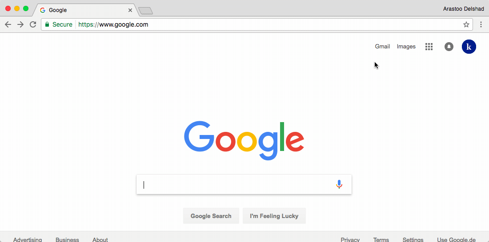
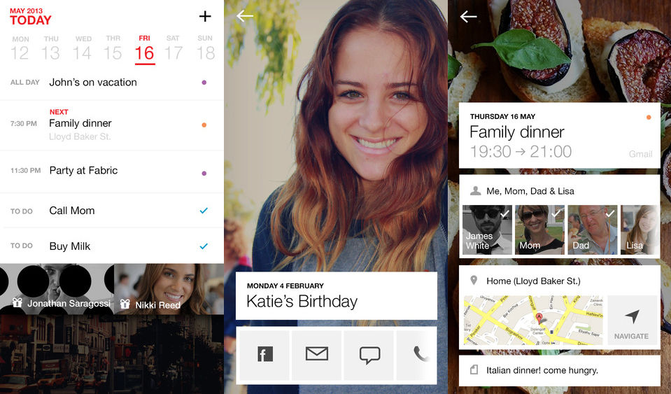

3 Approaching Effectively
3.1 Setting goals¶
Summary
Before you plan out your schedule, you need to set goals. They will help guide your schedule so that you can reach your goals on time. The following methods will help you to accomplish this!
S.M.A.R.T goal method¶
Summary
The S.M.A.R.T goal mehtod helps ypu his method we are going to set goals that are Specific, Measurable, Attainable, Relevant, and Time-based.
| Letter | Criterion |
|---|---|
| S | Specific |
| M | Measurable |
| A | Attainable/Actionable |
| R | Relevant |
| T | Time-based/Time-bound |
Below you find a definition of each of the S.M.A.R.T. goal criteria.
Specific: Goals should be simplistically written and clearly define what you are going to do.
Measurable: Goals should be measurable so that you have evidence that you have accomplished the goal.
Attainable/Actionable: Goals should stretch you slightly so you feel challenged, but defined well enough so that you can achieve them.
Relevant: Goals should be relevant to the direction you want your life and career to take.
Time-based/Time-bound: Goals should be linked to a timeframe that creates a practical sense of urgency, or results in tension between the current reality and the vision of the goal.
Tip
When defining your S.M.A.R.T goals use this questionnaire below to make sure that your goals are defined in a smart way. You can also rewatch this video about the S.M.A.R.T goal method, in case you want to refresh your knowledge about this method.
-
Specific: What will the goal accomplish? How and why will it be accomplished?
-
Measurable: How will you measure whether or not the goal has been reached (list at least two indicators)?
-
Achievable/Actionable: Is it possible? Have others done it successfully? Will meeting the goal challenge you without defeating you?
-
Relevant: Why is this goal important to you? What are the benefits and rewards of accomplishing this goal? Why will you be able to stay committed in the long-run?
-
Time-bound: What is the established completion date and does that completion date create a practical sense of urgency?
H.A.R.D. goal method¶
Summary
The H.A.R.D. method is a very easy and effective way to follow when you want to set personal goals. This method was ideated by Mark Murphy in his well-researched book Hundred Percenters, to set effective goals.
| Letter | Criterion |
|---|---|
| H | Heartfelt |
| A | Animated |
| R | Required |
| D | Difficult |
Below you find a definition of each of the H.A.R.D. goal criteria.
Heartfelt: Have an emotional attachment with your goals when setting them.
Animated: Imagine vivid pictures of the positive feelings you’ll have for achieving your goals.
Required: Build a sense of urgency and necessity into the goals you’re setting.
Difficult: Make your goals difficult and be prepared to take their challenges head-on.
Tip
When defining your H.A.R.D. goals use this questionnaire below to make sure that your goals are defined in a smart way. And if you want to get more into the H.A.R.D. method you can check out this paper from summaries.com on the H.A.R.D. method.
-
Heartfelt: Why do you care about this goal?
-
Animated: What is the vision in your mind of what it would feel like to achieve your goal? (Try to write it down!)
-
Required: What can you do about procrastination when it comes to working towards your goals?
-
Difficult: What’s the worst thing that can happen if I fail at achieving this goal? Is the goal challenging me in some way?
W.O.O.P method¶
Summary
The W.O.O.P method is a very new method for goal setting created by Gabriele Oettingen and Peter Gollwitzer. It has proven to be effective across ages and life domains.
| Letter | Criterion |
|---|---|
| W | Wish |
| O | Outcome |
| O | Obstacle |
| P | Plan |
Below you find a definition of each of the W.O.O.P goal criteria.
Wish: Wish something you want to accomplish for real, one that’s exciting, challenging, realistic.
Outcome: Imagine the best outcome of your goal, and feel how would the outcome make you feel.
Obstacle: Imagine the personal obstacles that prevent you from accomplishing your goal.
Plan: Make an "if-plan" to name an action you could do if your obstacle occurs.
Tip
When defining your H.A.R.D. goals use this questionnaire below to make sure that your goals are defined in a smart way. And if you want to get more into the H.A.R.D. method you can check out tpage from Character Lab on the W.O.O.P method. They even over a whole online training for free on this method. Check it out if you want to get deeper into the W.O.O.P. method!
-
Wish: Is your goal realy something you want to accomplish?
-
Outcome: How would the outcome make you feel?
-
Obstacle: What obstacles are preventing you from accomplishing your goal?
-
Plan: What can you do to overcome your obstacle? (E.g. When I am distracted by my phone, I will put it in the drawer.)
3.2 Working towards goals¶
Checklist for drafting your schedule¶
- Set your goals (using one of our goal setting methods).
- Write down your weekly work schedule.
- Write down other recurring obligations.
- Write down anything else you will be doing at a specific time.
- Check how many hours you can devote to studying.
- Divide the total number of hours into manageable study sessions.
- If possible, including extra time for each course, in case you don’t complete what you need to do each week.
- Space out your study sessions throughout the week.
Tip
Methodological Breaks: Make sure that if you are lining up many study sessions in a row, to plan time to rest and take a break from learning.
- Check out the estimated workload of the courses you want to take by visiting the Kiron study planner.
- Check if the courses are self-paced or not.
- Look at the schedule you created and try to determine the hours you want to devote to studying a specific course.
Tip
You don’t want to take on too much, or take on too little. Finding the right course load may take time, but you have to start out by making informed guesses.
Calendar apps¶
Google Calendar¶
The Google Calendar became by now something like the standard within the world of free digital calendars. It allows you to schedule your personal study times and even invite fellow students to join via Google Hangout within your study sessions.
It's available for Android Phones free, iPhones free and Google Chrome free.
Tip
Enables you to to schedule your study time in your personal calendar, no matter where you are.
Available on  and
and 

Quick overview on how to use the Google Calendar
Cal Calendar¶
The Cal Calendar is a calendar app for everyone who is in need of a well-designed calendar with all the standard calendar features. It's available for Android Phones free and iPhones free.
Tip
Enables you to schedule your study time within a beautiful app and thereby makes time setting even more fun.
Available on  and
and 

Overview of the Cal Calendar features
Passion Planner¶

Although you are mainly using digital tools while studying online, it could be possible that a paperback calendar might work better for you. If you think so, it's time to check out Passion Planner, which is a calendar that can be downloaded for free or ordered international on a very low budget.
Tip
Passion Planner is a calendar that should be checked out by you if you are more a pen and paper person.

Quick overview on the development behind Passion Planner
3.3 Planning study sessions¶
Checklist for planning a study sessions¶
- Study sessions are between 1 and 4 hours (including breaks).
- Breaks are scheduled within your study sessions.
- Shorter study sessions are planned for new material.
- Longer study sessions are planned for challenging tasks (e.g. assignments).
- Small deadlines are set for yourself within the study sessions.
Dos and Donts for taking breaks¶
- Avoid staying on your computer or device (no facebook, e-mail, youtube cat videos).
- Move out of your study space by changing locations (e.g. go outside to get some fresh air).
- Move your body or doing some exercise (this will stimulate your brain and make you alert when you continue studying).
- Talk to other people.
- Eat or drink something.
Tip
Do anything that makes you feel fresh and relaxed and ready to learn new things!
Do not stay at your computer, no matter how relaxing that might feel!
3.4 Preparing for your next course¶
Checklist for preparing for your next course¶
- Read the syllabus and guidelines of the course you want to take.
- Look at homework, assignments or any other information you think will help you in your learning.
- Check the prerequisites for the course (prerequisites tell you what you need to know before you can take a course).
Tip
If you don’t have a prerequisite, don’t worry. Just take the preparation courses or learn this information online through websites like Khan Academy.
3.5 Execution and endurance¶
Overcoming procrastination¶
Summary
Procrastination is the avoidance of doing a task that needs to be accomplished. It is the practice of doing more pleasurable things in place of less pleasurable ones, or carrying out less urgent tasks instead of more urgent ones, thus putting off impending tasks to a later time.
You can overcome procrastination by following those 4 tips:
-
Just take the first step: You don't have to see the whole staircase, just take the first step. When you start to look too far, the task just seems to be impossible and you tend to give up at the very beginning.
-
Eat the frog first: Start with the most difficult task first. When you start with the hard jobs first the easy jobs take care of themselves.
-
Change your environment: Different environments have a different impact on your productivity. Look at your work desk, is it too relaxing and makes you want to snuggle in a blanket and sleep. Time to change that!
-
Do not wait for the perfect time: When you set your goals, you need to understand that there is no perfect time to start. Perfectionism is one of the biggest reasons for procrastination.
Tip
Watch/rewatch the follwing Skillopedia videos to refresh your understanding fo procrastination and how to eliminate it.
Skillopedia video with 4 ways to beat procrastination
Skillopedia video about 8 effective ways to overcome procrastination by using time management skills